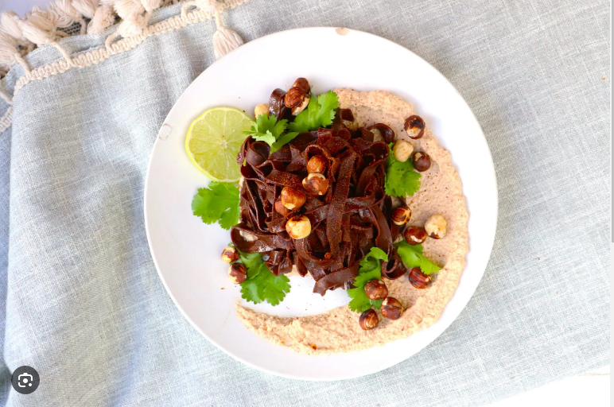

Description
This is a unique dish that combines two unexpected ingredients - chocolate and pasta - to create a savory and slightly sweet flavor.
The pasta is cooked in a savory broth with onions and garlic, then combined with a rich chocolate sauce and topped with toasted
almonds and Parmesan cheese. It's a dish that will definitely surprise your taste buds!
Ingredients
- 8 oz spaghetti
- 1 large onion, diced
- 3 cloves garlic, minced
- 4 cups chicken or vegetable broth
- 1/2 cup heavy cream
- 4 oz dark chocolate, chopped
- 1/4 cup toasted almonds, chopped
- 1/4 cup grated Parmesan cheese
- Salt and pepper, to taste
- Olive oil, for cooking
Steps
- In a large pot, heat some olive oil over medium heat. Add the diced onions and minced garlic, and sauté for a few minutes until they are soft and fragrant.
- Add the spaghetti to the pot and stir to coat it with the onion and garlic mixture.
- Pour in the chicken or vegetable broth and bring it to a boil. Reduce the heat to low and let the
pasta simmer until it is cooked to your liking, stirring occasionally.
- While the pasta is cooking, prepare the chocolate sauce. In a small saucepan, heat the heavy cream over medium heat until it starts to simmer.
- Add the chopped dark chocolate to the cream and stir until it is completely melted and smooth.
- When the pasta is cooked, drain off any excess liquid and return it to the pot.
- Pour the chocolate sauce over the pasta and stir until it is evenly coated.
- Transfer the pasta to serving bowls and top each bowl with chopped toasted almonds and grated Parmesan cheese.
- Season with salt and pepper to taste, and serve immediately.